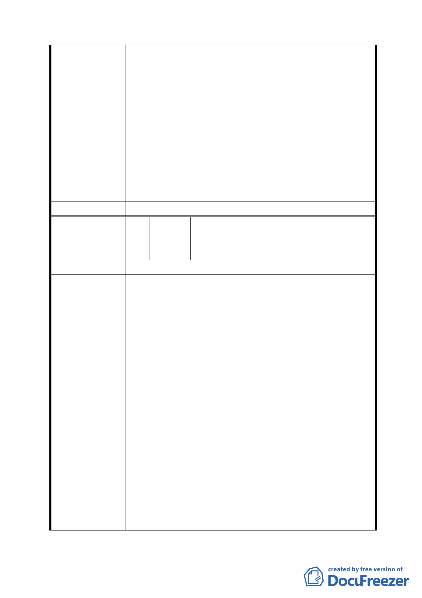

建議辦法
委員會決議
編號
陳情理由
建議辦法
一、設立兒童育樂中心、健康運動中心(桌球、羽球、籃
球、撞球、保齡球等)、健身中心(設備各種健身器
材)、游泳池與建設完善舞蹈教室，加強環境衛生品
質。
二、日後新建大樓之空間資源(如活動中心)應提供給樟
新里與樟文里(民國 99 年樟新里將劃分出新的樟文
里)使用。
三、建議設立老人康樂中心及安養或託老機構，及建請
增設防災教育館二館之規劃。
四、反對社會局設置傷殘中心，工務局進駐，因對社區
營造格格不入也不符合社區需求。
同編號 1。
臺北市議會市民服務中心協調永安里辦
9 陳情人 公室陳情案(劉春長里長) (中山區培英市
場)
為培英市場預定地未來規劃案，召開協調會議。
會議結論:
一、永安里之區民活動中心早於 89 年爭取，永安國小多
功能體育館與游泳池早先於民國 91 年已申請，均與
都市發展局開過協調會有案可稽。
二、針對前述爭取事項，本日教育局、民政局、財政局
代表均表示支持，且也有需求。
三、都市發展局表示內政部已函示，機關用地已無需指
定使用用途，只要市府相關公務使用允許。依目前公
展都市計畫內容，本機關用地可供區民活動中心及教
育局多功能活動之中心使用(包括游泳池)。
四、民眾表示已聯名向都市計畫委員會表達反對興建社
會局之身心障礙住宿場所。
五、請都市發展局及都委會務必將民政局、教育局之需
求列入，並請教育局、民政局編列配合預算。
六、本案於今年 9 月當地民眾才知市政府即將將培英市
場用地變更為社會局主辦的機關用地，民眾不滿市府
從未與原提案人及議員溝通，已聯名向都委會異議，
請社會局續與當地民眾溝通。
- 13 -